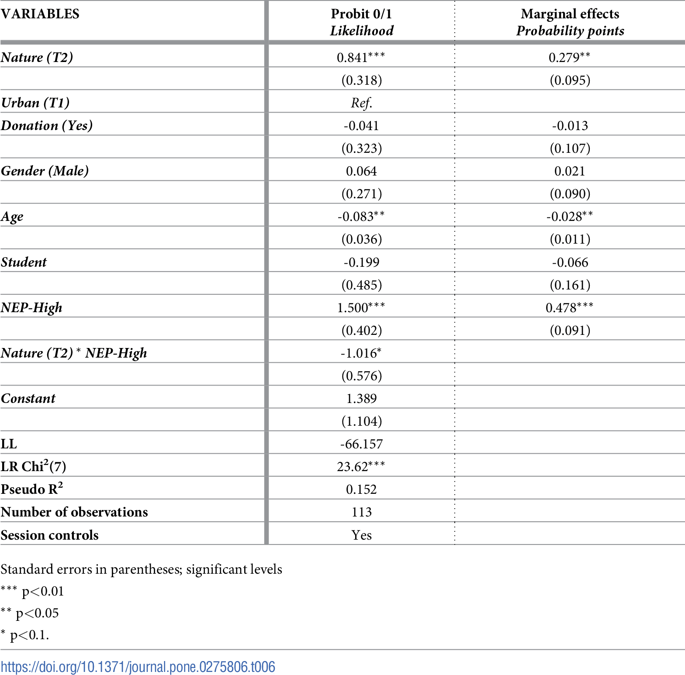

03:00
Proportional odds + Probit regressions
Prof. Maria Tackett
Feb 12, 2024
Announcements
Project 01
presentations in class Wed, Feb 14
write up due Thu, Feb 15 at 9pm
Quiz 02: Tue, Feb 20 - Thu, Feb 22
Covers readings & lectures: Jan 24 - Feb 12
Poisson regression, unifying framework for GLMs, logistic regression, proportional odds models, probit regression
Learning goals
Introduce proportional odds and probit regression models
Understand how these models are related to logistic regression models
Interpret coefficients in context of the data
See how these models are applied in research contexts
Proportional odds models
Predicting ED wait and treatment times
Ataman and Sarıyer (2021) use ordinal logistic regression to predict patient wait and treatment times in an emergency department (ED). The goal is to identify relevant factors that can be used to inform recommendations for reducing wait and treatment times, thus improving the quality of care in the ED.
Data: Daily records for ED arrivals in August 2018 at a public hospital in Izmir, Turkey.
Predicting ED wait and treatment times
Response variables:
Wait time:- Patients who wait less than 10 minutes
- Patients whose waiting time is in the range of 10-60 minutes
- Patients who wait more than 60 minutes
Treatment time:Patients who are treated for up to 10 minutes
Patients whose treatment time is in the range of 10 - 120 minutes
Patients who are treated for longer than 120 minutes
Predicting ED wait and treatment times
Predictor variables:
Gender(sex): Male, FemaleAge: [0-14], [15-64], [65-84], \(\geq\) 85Arrival mode: Walk in, AmbulanceTriage level: Red (urgent), Green (non-urgent)ICD-10 diagnosis: Codes specifying patient’s diagnosis
Ordered vs. unordered variables
Categorical variables with 3+ levels
Unordered
Voting choice in election with multiple candidates
Type of cell phone owned by adult sin the U.S.
Favorite social media platform among undergraduate students
Ordered
Wait and treatment times in the emergency department
Likert scale ratings on a survey
Employee job performance ratings
Proportional odds model
Let \(Y\) be an ordinal response variable that takes levels \(1, 2, \ldots, J\) with associated probabilities \(p_1, p_2, \ldots, p_J\)
The proportional odds model can be written as the following:
\[\begin{aligned}&\log\Big(\frac{P(Y \leq 1)}{P(Y > 1)}\Big) = \beta_{01} - \beta_1x_1 - \dots - \beta_px_p \\ & \log\Big(\frac{P(Y\leq 2)}{P(Y > 2)}\Big) = \beta_{02} -\beta_1x_1 - \dots - \beta_px_p \\ & \dots \\ & \log\Big(\frac{P(Y\leq J-1)}{P(Y > J-1)}\Big) = \beta_{0{J-1}} - \beta_1x_1 - \dots - \beta_px_p\end{aligned}\]
What does \(\beta_{01}\) mean? What does \(\beta_1\) mean?
Proportional odds model
Let’s consider one portion of the model:
\[ \log\Big(\frac{P(Y\leq k)}{P(Y > k)}\Big) = \beta_{0k} - \beta_1x_1 - \dots - \beta_px_p \]
The response variable is \(logit(Y\leq k)\), the log-odds of observing an outcome less than or equal to category \(k\).
\(\beta_j > 0\) is associated with increased log-odds of being in a higher category of \(Y\)
- \(e^{\beta_j}\) associated with an increased odds of being in a higher category of \(Y\)
Effective of one unit increase in \(x_j\) the same regardless of which category of \(Y\)
Multinomial logistic model
Suppose the outcome variable \(Y\) is categorical and can take values \(1, 2, \ldots, K\) such that
\[ P(Y = 1) = p_1, \ldots , P(Y = K) = p_K \hspace{5mm} \text{ and } \hspace{5mm} \sum_{k = 1}^{K} p_k = 1 \]
Choose baseline category. Let’s choose \(Y = 1\) . Then
\[\begin{aligned}&\log\Big(\frac{P(Y = 2)}{P(Y = 1)}\Big) = \beta_{02} - \beta_{12}x_1 - \dots - \beta_{p2}x_p \\ & \log\Big(\frac{P(Y = 3)}{P(Y =1)}\Big) = \beta_{03} -\beta_{13}x_1 - \dots - \beta_{p3}x_p \\ & \dots \\ & \log\Big(\frac{P(Y = K)}{P(Y = 1)}\Big) = \beta_{0{K}} - \beta_{1K}x_1 - \dots - \beta_{pK}x_{p}\end{aligned}\]
Multinomial logistic vs. proportional odds
How is the proportional odds model similar to the multinomial logistic model? How is it different? What is an advantage of each model? What is a disadvantage?
Effect of arrival mode on waiting time

Waiting time model output from Ataman and Sarıyer (2021)
The variable arrival modehas two possible values: ambulance and walk-in. Describe the effect of arrival mode on waiting time. Note: The baseline category is walk-in.
Effect of triage level
Consider the full output with the ordinal logistic models for wait and treatment times.

Waiting and treatment time model output from Ataman and Sarıyer (2021).
Use the results from both models to describe the effect of triage level on waiting and treatment times. Note: The baseline category is green.
02:00
Fitting proportional odds models in R
Fit proportional odds models using the polr function in the MASS package:
Probit regression
Impact of nature documentary on recycling
Ibanez and Roussel (2022) conducted an experiment to understand the impact of watching a nature documentary on pro-environmental behavior. The researchers randomly assigned the 113 participants to watch an video focused about architecture in NYC (control) or a video about Yellowstone National Park (treatment). As part of the experiment, participants were asked to dispose of their headphone coverings in a recycle bin available at the end of the experiment.
Impact of nature documentary on recycling
Response variable: Recycle headphone coverings vs. not
Predictor variables:
- Age
- Gender
- Student
- Made donation to environmental organization in previous part of experiment
- Environmental beliefs measured by the new ecological paradigm scale (NEP)
Probit regression
Let \(Y\) be a binary response variable that takes values 0 or 1, and let \(p = P(Y = 1 | x_1, \ldots, x_p)\)
\[ probit(p) = \Phi^{-1}(p) = \beta_0 + \beta_1 x_1+ \dots + \beta_px_p \]
where \(\Phi^{-1}\) is the inverse normal distribution function.
The outcome is a z-score at which the cumulative probability is equal to \(p\)
- e.g. \(probit(0.975) = \Phi^{-1}(0.975) = 1.96\)
Interpretation
\(\hat{\beta}_j\) is the estimated change in z-score for each unit increase in \(x_j\), holding all other factors constant.
This is a fairly clunky interpretation, so the (average) marginal effect of \(x_j\) is often interpreted instead
The marginal effect of \(x_j\) is essentially the change the probability from variable \(x_j\)
Impact of nature documentary

Interpret the effect of watching the nature documentary Nature(T2) on recycling.
Probit vs. logistic regression
Pros of probit regression:
Some statisticians like assuming the normal distribution over the logistic distribution.
Easier to work with in more advanced settings, such as multivariate and Bayesian modeling
Cons of probit regression:
Z-scores are not as straightforward to interpret as the outcomes of a linear probability model.
We can’t use odds ratios to describe findings.
It’s more mathematically complicated than logistic regression.
It does not work well for response variable with 3+ categories
Fitting probit regression models in R
Fit probit regression models using the glm function with family = binomial(link = probit).
Calculate marginal effects using the margins function from the margins R package.
Ideology vs. issue statements
Let’s look at the model using ideology and party ID to explain the number of issue statements by politicians. We will use probit regression for the “hurdle” part of the model - the likelihood a candidate comments on at least one issue.
library(margins)
politics <- read_csv("data/ambiguity.csv") |>
select(ideology, democrat, totalIssuePages) |>
drop_na() |>
mutate(has_issue_stmt = factor(if_else(totalIssuePages > 0, 1, 0)), democrat = as_factor(democrat))
hurdle <- glm(has_issue_stmt ~ ideology + democrat,
data = politics,
family = binomial(link = probit))Ideology vs. issue statements
| term | estimate | std.error | statistic | p.value |
|---|---|---|---|---|
| (Intercept) | 1.272 | 0.117 | 10.829 | 0.000 |
| ideology | 0.262 | 0.089 | 2.926 | 0.003 |
| democrat1 | 0.149 | 0.180 | 0.827 | 0.408 |
democrat1
0.02333Interpret the marginal effect of democrat on commenting on at least one issue.
Wrap up GLM for independent observations
Wrap up
Covered fitting, interpreting, and drawing conclusions from GLMs
- Looked at Poisson, Negative Binomial, and Logistic (binary, binomial, ordinal) in detail
Used Pearson and deviance residuals to assess model fit and determine if new variables should be added to the model
Addressed issues of overdispersion and zero-inflation
Used the properties of the one-parameter exponential family to identify the best link function for any GLM
Everything we’ve done thus far as been under the assumption that the observations are independent. Looking ahead we will consider models for data with dependent (correlated) observations.
References
Ataman, Mustafa Gökalp, and Görkem Sarıyer. 2021. “Predicting Waiting and Treatment Times in Emergency Departments Using Ordinal Logistic Regression Models.” The American Journal of Emergency Medicine 46: 45–50.
Ibanez, Lisette, and Sébastien Roussel. 2022. “The Impact of Nature Video Exposure on Pro-Environmental Behavior: An Experimental Investigation.” Plos One 17 (11): e0275806.
McNulty, Keith. 2021. Handbook of Regression Modeling in People Analytics: With Examples in r and Python. CRC Press.
Roback, Paul, and Julie Legler. 2021. Beyond multiple linear regression: applied generalized linear models and multilevel models in R. CRC Press.